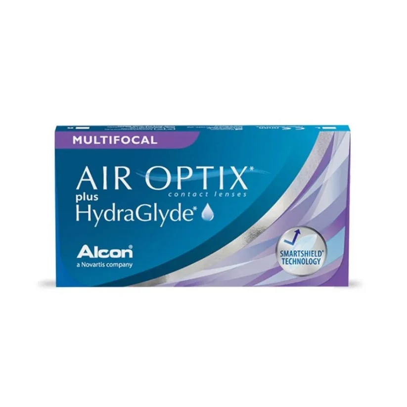

ALCON

ALCON
Air Optix Hydraglyde Multifocal - Caja de 6 lentes
Promociones aplicadas:
NUEVO VISIÓN MULTIFOCAL- Suscríbete y descarga tu cupón 15% DCTO adicional aquí.
- Satisfacción garantizada
Asesoría y adaptación personalizada en tienda. - Retira en 24 horas en tienda*
Envío gratis a todo el Perú. Consulta los plazos aquí
PRECIO:
S/440
Hasta 12 cuotas sin interés - Valor cuota: S/ 36.66
Acerca del producto
Detalles de los lentes
∧| Característica | Especificación Técnica |
|---|---|
| Tipo | Mensuales |
| Uso | Presbicia (Multifocal) |
| Material | Lotrafilcon B |
| Cantidad | 6 lentes por caja |
| Producto original con certificación de calidad G&A | |
Acerca de ALCON
∧
Lentes mensuales multifocales diseñados con un sistema de transición suave para una visión clara de cerca, de lejos y a distancias intermedias, combinados con tecnología de hidratación continua HydraGlyde.